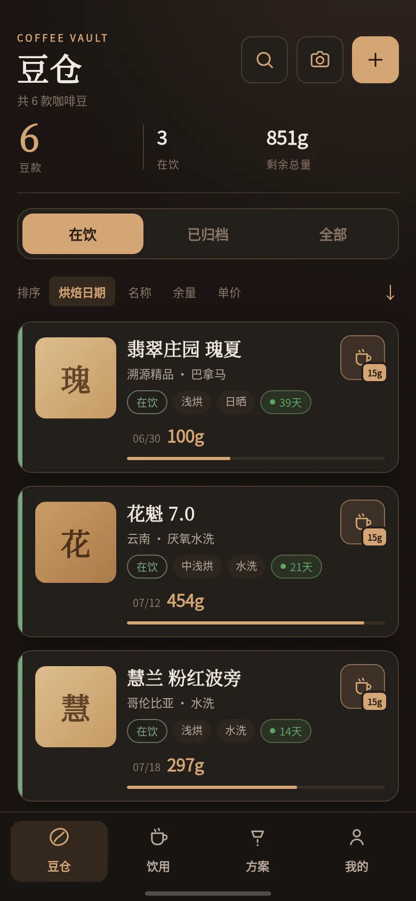
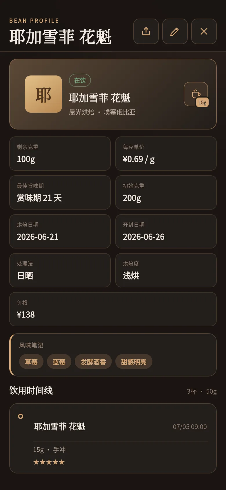
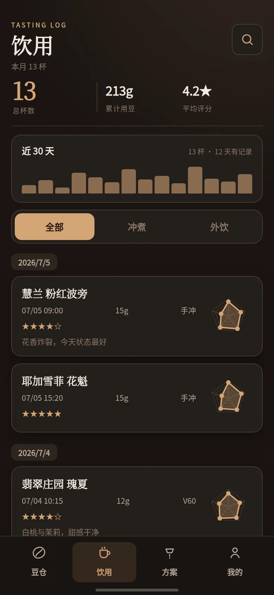
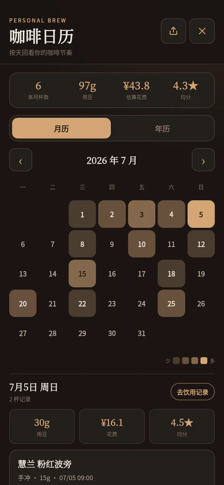
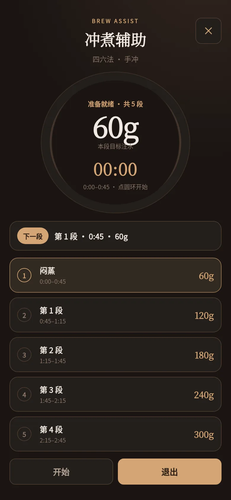
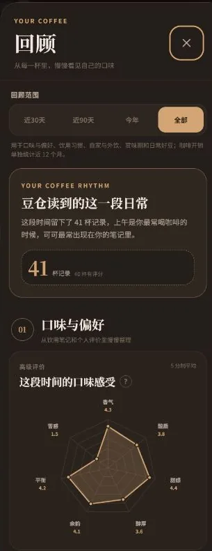

🫘
咖啡豆管理
产地、处理法、烘焙度与每克单价一处记全；设定开封赏味期后首页自动倒计时，赏味将至或余量不足都会提醒。多维排序、状态筛选，还能存咖啡袋与标签图。
本地优先 · Android 与 Web
一包豆子 · 一段风味 · 一页日常
为咖啡爱好者设计的本地优先记录工具。保存每包豆子的产地、风味与价格，记录每次冲煮与饮用，让日常里喝过的咖啡慢慢有迹可循。





功能
产地、处理法、烘焙度与每克单价一处记全；设定开封赏味期后首页自动倒计时，赏味将至或余量不足都会提醒。多维排序、状态筛选，还能存咖啡袋与标签图。
APK 内置 ML Kit 模型，离线拍下包装就能解析日期、克重、处理法、烘焙度、产地与风味，直接填进编辑器；低可信字段黄色标出，确认即可入库。
点一下「喝一杯」记下这次用了多少克，自动从豆仓扣量；随后从容打分——五星总评加多维风味雷达，也可只留评分、备注和最多 3 张照片。
在外面喝到的咖啡也记得下：店名、饮品、价格与地点，不关联豆子、不扣库存，却一样计入咖啡日历的花费与评分。
按冲煮方式管理配方，粉水比、水温、研磨度与设备都能存；喝一杯时优先推上次与同方式的方案，一次满意的冲煮也能随手另存为新方案。
手冲时打开冲煮辅助，按方案步骤自动计时，放大显示本段注水量、常驻下一段预览；结束后自动存下实际用时、扣减库存，紧接着评分。
咖啡日历把每天喝了什么串成线：月历看当天详情，年历用格子热力图铺满整年，随手就能看到那天的花费与评分。
咖啡豆、饮用记录、冲煮方案与咖啡日历都能生成统一的票据风卡片，含雷达图、备注与手账照片；方案还带离线分享码（DC1-）与二维码，扫码即可导入。
默认关闭、不登录不联网。需要时登录，就能在 Android 与 Web 之间同步豆子、记录、方案与图片；数据经 HTTPS 传输、仅你可见，云端副本可随时删除。
咖啡日历与回顾
月历查看当天喝了什么、用了多少豆、花了多少钱，也能回看评分；年历则用热力图串起整年的饮用节奏。
回顾会从评价和饮用笔记中整理口味偏好、饮用时段、近 12 个月花费，以及值得再喝的豆子。
这些内容都基于本机记录整理，无需登录。

界面一览
离线与隐私
默认完全离线：数据保存在你的设备（Android SQLite / Web IndexedDB），不需要账号或网络，拍照识别只申请相机权限。云同步是可选功能，仅在登录并开启后使用；数据经 HTTPS 传输、仅你自己可见，你可以随时退出账号或删除云端副本。
Android 7 及以上安装 APK；任何现代浏览器打开 Web 版即可使用，可添加到主屏当作 App。
APK 通过 GitHub Releases 分发（正式签名版）。